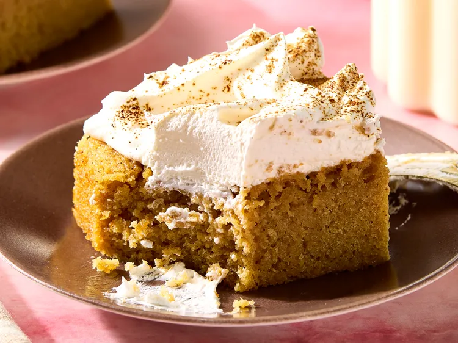

Home
Horchata Latte Cake

This ain't your Abuela's horchata
Ingredients
- 2 3/4 cups of all purpose flour
- 1 tablespoon baking powder
- 1 teaspoon salt
- 1 teaspoon ground cinnamon, plus more for sprinkling
- 1 cup butter, softened
- 2 cups sugar
- 4 large eggs
- 2 tablespoons instant espresso coffee powder, divided, plus more for sprinkling
- 1 1/2 teaspoons vanilla extract
- 2 1/2 cups horchata, divided
- 1/2 teaspoon almond extract
- 2/3 cup canned sweetened condesed milk
- 1 (8-ounce) container frozen whipped topping, thawed
Steps
- Gather all ingredients. Preheat the oven to 350 degrees F (or 175 degrees C). Grease and flour a 9x13-inch baking pan.
- Whisk together flour, baking powder, salt, and cinnamon in a bowl.
- Beat butter in a large bowl with an electric mixer on medium for 30 seconds. Gradually beat in sugar 1/4 cup at a time. Scrape bowl. Beat until light and fluffy, 2 minutes more.
- Add eggs one at a time, beating after each. Beat in 4 teaspoons espresso powder, the vanilla, and almond extract.
- Alternately add flour mixture and 1 3/4 cups horchata, beating on low after each addition until just combined. Batter may appear curdled, it will be fine. Spread batter into prepared pan.
- Bake until a toothpick inserted into the center of the cake comes out clean, 35 to 40 minutes.
- Whisk together remaining 3/4 cup horchata, the sweetened condensed milk, and remaining 2 teaspoons espresso powder.
- Poke holes all over cake with a skewer or chopstick. Gradually pour horchata mixture evenly over the cake.
- Cool cake completely on a wire rack.
- Top cake with whipped topping. Cover and chill at least 1 hour.
- Sprinkle with additional cinnamon and espresso powder before serving.